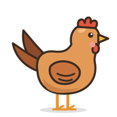
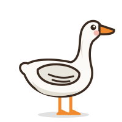
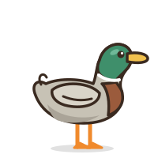
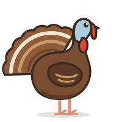
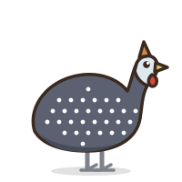
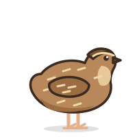

Птахи подвір'я
Сім видів свійських птахів, яких найчастіше тримають у господарствах Вінниччини. Переверніть картку, щоб побачити коротку довідку, або відкрийте статтю з докладним описом.

Курка
Курка: коротко
- Вага
- 1,8–3 кг, півень до 4 кг
- Яєць на рік
- 150–300, залежно від породи
- Насиджування
- 21 день
- Тривалість життя
- 5–10 років
Курка
Найпоширеніша свійська птиця: кури живуть майже в кожному сільському дворі Вінниччини. Їх тримають заради яєць і м'яса, а півень здавна слугує сільським «будильником».
- Живе гуртом із чітким порядком старшинства.
- Найкращі несучки дають до 300 яєць на рік.
- Добре почувається у звичайному курнику з вигулом.

Гуска
Гуска: коротко
- Вага
- 4–7 кг
- Яєць на рік
- 30–60
- Насиджування
- 28–30 днів
- Тривалість життя
- 15–20 років
Гуска
Велика й поважна птиця, яку традиційно випасають на луках біля ставків і річок. Гуси дають м'ясо, а їхній пух здавна йшов на подушки й перини.
- Пильний «сторож»: гучно ґелґоче, щойно побачить чужого.
- Живиться переважно травою, тому економна в утриманні.
- Одна з найдовговічніших свійських птахів.

Качка
Качка: коротко
- Вага
- 2,5–4 кг
- Яєць на рік
- 100–200
- Насиджування
- 28 днів, мускусна – до 35
- Тривалість життя
- 8–12 років
Качка
Водоплавна птиця, що походить від дикого крижня. Качки швидко ростуть, невибагливі до корму і найкраще почуваються там, де є вода.
- Пір'я змащене жиром і не намокає.
- Плаский дзьоб допомагає цідити воду й шукати поживу.
- Каченята вже за кілька днів охоче плавають.

Індик
Індик: коротко
- Вага
- Індичка 5–9 кг, індик 10–20 кг
- Яєць на рік
- 80–120
- Насиджування
- 28 днів
- Тривалість життя
- Близько 10 років
Індик
Найбільший птах подвір'я, родом з Америки. Індики потрапили до Європи в XVI столітті і відтоді стали звичними і в українських селах.
- Розпускає хвіст віялом, щоб здаватися більшим.
- Голова змінює колір залежно від настрою.
- Індички – дбайливі квочки.

Голуб
Голуб: коротко
- Вага
- 0,3–0,5 кг, м'ясні породи до 1 кг
- Яєць у кладці
- 2, до 6–8 кладок на рік
- Насиджування
- 17–19 днів
- Тривалість життя
- 15–20 років
Голуб
Одна з найдавніших свійських птахів. Голубів тримають заради краси й польоту, а поштові породи славляться здатністю повертатися додому за сотні кілометрів.
- Пари створюються на все життя.
- Пташенят вигодовують обоє батьків.
- Голубник обладнують під дахом, з льотком для вильоту.

Цесарка
Цесарка: коротко
- Вага
- 1,5–2 кг
- Яєць на рік
- 80–150
- Насиджування
- 26–28 днів
- Тривалість життя
- 10–12 років
Цесарка
Невибаглива птиця родом з Африки, вбрана в сіре пір'я з білими цятками. Цесарок цінують за дієтичне м'ясо, міцні яйця та пильність.
- Гучним криком попереджає про небезпеку.
- Охоче ловить комах на городі.
- Добре літає і любить ночувати високо.

Перепілка
Перепілка: коротко
- Вага
- 120–150 г, м'ясні породи до 300 г
- Яєць на рік
- 250–300
- Насиджування
- 17–18 днів
- Тривалість життя
- 3–5 років
Перепілка
Найменша птиця подвір'я. Перепілки займають мало місця, швидко дорослішають і дають багато дрібних поживних яєць.
- Починає нестися вже у 6–7 тижнів.
- Живе в клітках або невеликих вольєрах.
- Візерунок на кожному яйці неповторний.